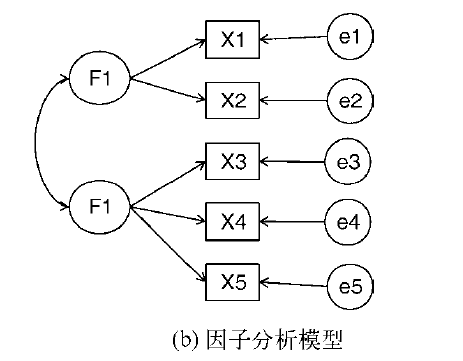
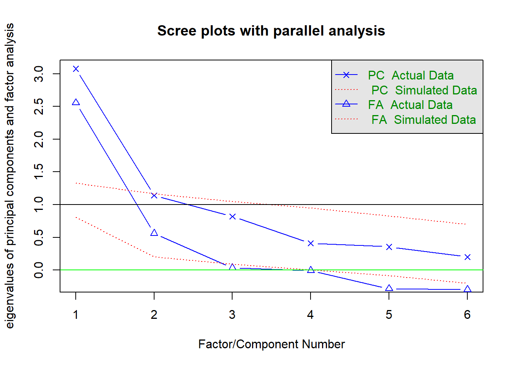
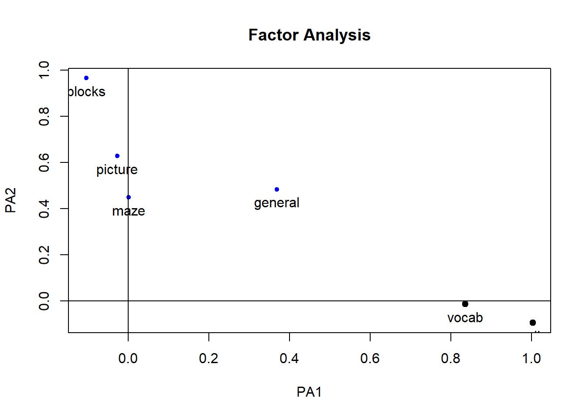
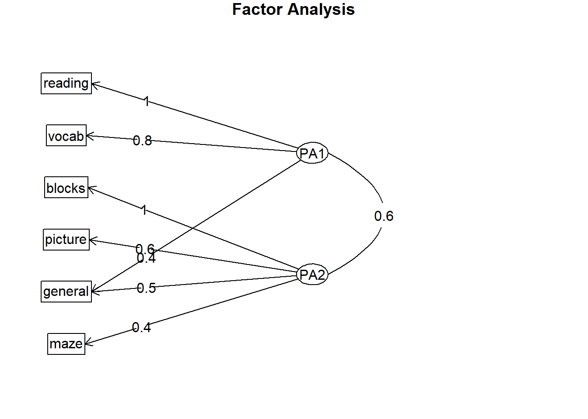
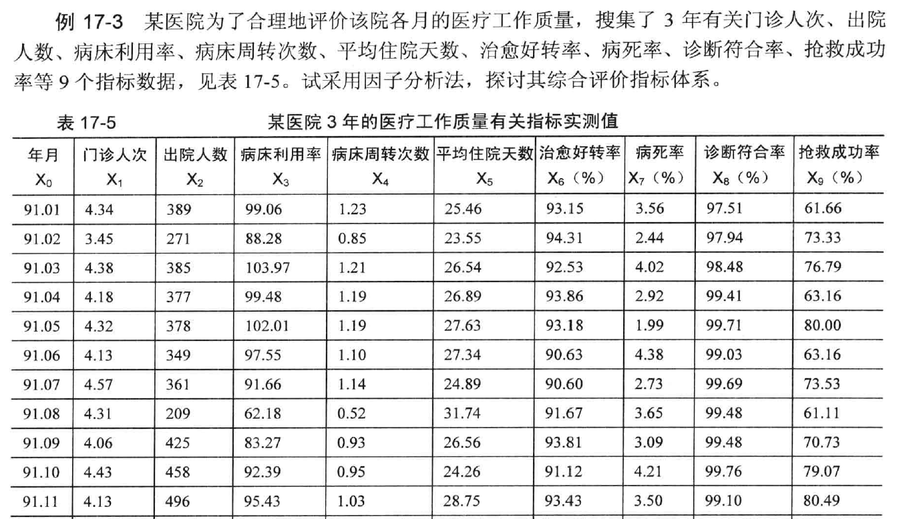
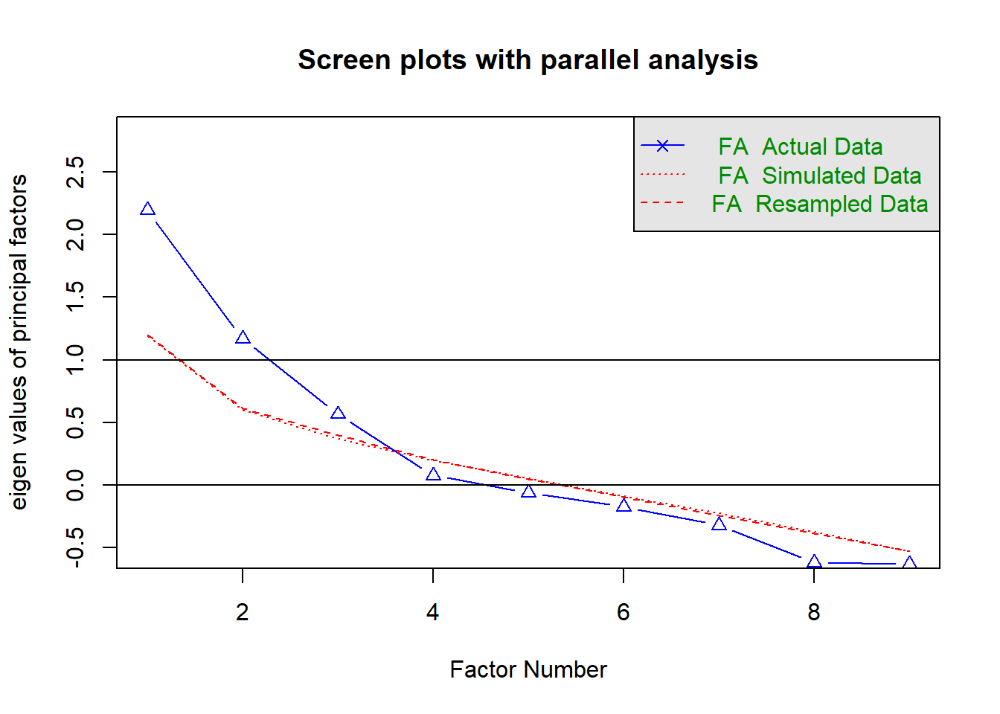
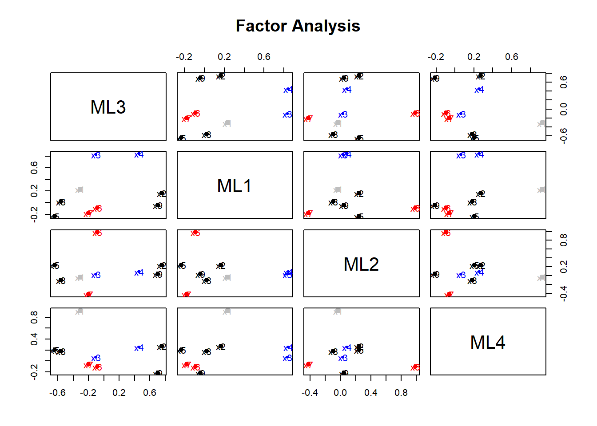
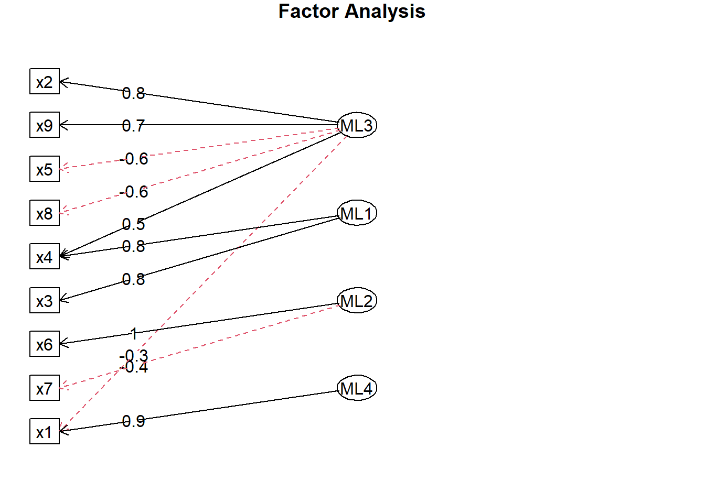

Chapter 16 探索性因子分析
16.1 因子分析

探索性因子分析（EFA）是一系列用来发现一组变量潜在结构的方法。它通过寻找一组更小的、潜在的或隐藏的结构来解释已观测到的、显式的变量间的关系。
Harman74.cor包含了24个心理测验间的相互关系，受试对象为145个七年级或八年级的学生。应用EFA探索该数据表明276个测验间的相互关系可用四个学生能力的潜在因子（语言能力、反应速度、推理能力和记忆能力）进行解释。
16.2 因子分析模型形式
\[ X_i=a_1F_1+a_2F_2+\cdots +a_pF_p+U_i \]
其中\(X_i\)是第i个可观测变量（\(i=1…k\)），\(F_j\)是公共因子（\(j=1…p\)），并且\(p<k\)。\(U_i\)是\(X_i\)变量独有的部分（无法被公共因子解释）。\(a_i\)可认为是每个因子对复合而成的可观测变量的贡献值。回到本章开头的Harman74.cor的例子，我们认为每个个体在24个心理学测验上的观测得分，是根据四个潜在心理学因素的加权能力值组合而成。
虽然PCA和EFA存在差异，但是它们的许多分析步骤都是相似的。为阐述EFA的分析过程，我们用它来对六个心理学测验间的相关性进行分析。
112个人参与了六个测验，包括非语言的普通智力测验（general）、画图测验（picture）、积木图案测验（blocks）、迷宫测验（maze）、阅读测验（reading）和词汇测验（vocab）。
我们如何用一组较少的、潜在的心理学因素来解释参与者的测验得分呢？数据集ability.cov提供了变量的协方差矩阵，你可用cov2cor()函数将其转化为相关系数矩阵。数据集没有缺失值。
16.3 因子分析的R语言实现
## Exploratory factor analysis of ability.cov data
options(digits=2)
library(psych)
covariances <- ability.cov$cov
# convert covariances to correlations
correlations <- cov2cor(covariances)
correlations## general picture blocks maze reading vocab
## general 1.00 0.47 0.55 0.34 0.58 0.51
## picture 0.47 1.00 0.57 0.19 0.26 0.24
## blocks 0.55 0.57 1.00 0.45 0.35 0.36
## maze 0.34 0.19 0.45 1.00 0.18 0.22
## reading 0.58 0.26 0.35 0.18 1.00 0.79
## vocab 0.51 0.24 0.36 0.22 0.79 1.00因为要寻求用来解释数据的潜在结构，可使用EFA方法。与使用PCA相同，下一步工作为判断需要提取几个因子。
16.3.1 判断需提取的公共因子数
用fa.parallel()函数可判断需提取的因子数：
# determine number of factors to extract
fa.parallel(correlations, n.obs=112, fa="both", n.iter=100,
main="Scree plots with parallel analysis")## Parallel analysis suggests that the number of factors = 2 and the number of components = 1abline(h=0,lwd=1,col="green")
结果解读 1
代码中使用了
fa="both",因子图形将会同时展示主成分和公共因子分析的结果。图形中有几个值得注意的地方。如果使用PCA方法，你可能会选择一个成分(碎石检验和平行分析)或者两个成分(特征值大于1)当摇摆不定时，高估因子数通常比低估因子数的结果好，因为高估因子数般较少曲解“真实“情况。
观察EFA的结果，显然需提取两个因子。碎石检验的前两个特征值(△)都在拐角处之上，并且大于基于100次模拟数据矩阵的特征值均值。对于EFA, Kaiser-Harris准则的特征值数大0, 而不是1（大部分人都没有意识到这 ）图形中该准则也建议选择两个因子。
16.3.2 提取公共因子
现在你决定提取两个因子，可以使用fa ()函数获得相应的结果fa() 函数的格式如下：
fa(r, nfactors=, n .obs= , rotate=, scores=, fm=)
其中：
r是相关系数矩阵或者原始数据矩阵；nfactors设定提取的因子数(默认为1);obs观测数（输入相关系数矩阵时需要填写）；rotate设定旋转的方法（默认互变异数最小法）；scores设定是否计算因子得分（默认不计算）；fm设定因子化方法（默认极小残差法）
与PCA不同，提取公共因子的方法很多，包括最大似然法(ml)、主轴迭代法(pa)、加权最小二乘法(wls)、广义加权最小二乘法(gls)和最小残差法(minres)。统计学家青眯使用最大似然法，因为它有良好的统计性质，不过有时候最大似然法不会收敛，此时使用主轴迭代法效果会很好。
本例使用主轴迭代法(fm="pa")提取未旋转的因子
fa <- fa(correlations, nfactors=2, rotate="none", fm="pa")
fa## Factor Analysis using method = pa
## Call: fa(r = correlations, nfactors = 2, rotate = "none", fm = "pa")
## Standardized loadings (pattern matrix) based upon correlation matrix
## PA1 PA2 h2 u2 com
## general 0.75 0.07 0.57 0.432 1.0
## picture 0.52 0.32 0.38 0.623 1.7
## blocks 0.75 0.52 0.83 0.166 1.8
## maze 0.39 0.22 0.20 0.798 1.6
## reading 0.81 -0.51 0.91 0.089 1.7
## vocab 0.73 -0.39 0.69 0.313 1.5
##
## PA1 PA2
## SS loadings 2.75 0.83
## Proportion Var 0.46 0.14
## Cumulative Var 0.46 0.60
## Proportion Explained 0.77 0.23
## Cumulative Proportion 0.77 1.00
##
## Mean item complexity = 1.5
## Test of the hypothesis that 2 factors are sufficient.
##
## The degrees of freedom for the null model are 15 and the objective function was 2.5
## The degrees of freedom for the model are 4 and the objective function was 0.07
##
## The root mean square of the residuals (RMSR) is 0.03
## The df corrected root mean square of the residuals is 0.06
##
## Fit based upon off diagonal values = 0.99
## Measures of factor score adequacy
## PA1 PA2
## Correlation of (regression) scores with factors 0.96 0.92
## Multiple R square of scores with factors 0.93 0.84
## Minimum correlation of possible factor scores 0.86 0.68结果解读2
- 可以看到，两个因子解释了六个心理学测验60%的方差。不过因子载荷阵的意义并不太好解释，此时使用因子旋转将有助于因子的解释。
16.3.3 因子旋转
你可以使用正交旋转或者斜交旋转来旋转两个因子的结果。现在我们同时尝试两种方法，看看它们的异同。
首先使用正交旋转：
fa.varimax <- fa(correlations, nfactors=2, rotate="varimax", fm="pa")
fa.varimax## Factor Analysis using method = pa
## Call: fa(r = correlations, nfactors = 2, rotate = "varimax", fm = "pa")
## Standardized loadings (pattern matrix) based upon correlation matrix
## PA1 PA2 h2 u2 com
## general 0.49 0.57 0.57 0.432 2.0
## picture 0.16 0.59 0.38 0.623 1.1
## blocks 0.18 0.89 0.83 0.166 1.1
## maze 0.13 0.43 0.20 0.798 1.2
## reading 0.93 0.20 0.91 0.089 1.1
## vocab 0.80 0.23 0.69 0.313 1.2
##
## PA1 PA2
## SS loadings 1.83 1.75
## Proportion Var 0.30 0.29
## Cumulative Var 0.30 0.60
## Proportion Explained 0.51 0.49
## Cumulative Proportion 0.51 1.00
##
## Mean item complexity = 1.3
## Test of the hypothesis that 2 factors are sufficient.
##
## The degrees of freedom for the null model are 15 and the objective function was 2.5
## The degrees of freedom for the model are 4 and the objective function was 0.07
##
## The root mean square of the residuals (RMSR) is 0.03
## The df corrected root mean square of the residuals is 0.06
##
## Fit based upon off diagonal values = 0.99
## Measures of factor score adequacy
## PA1 PA2
## Correlation of (regression) scores with factors 0.96 0.92
## Multiple R square of scores with factors 0.91 0.85
## Minimum correlation of possible factor scores 0.82 0.71结果解读3
结果显示因子变得更好解释了。
阅读和词汇在第一因子上载荷较大，画图、积木图案和迷宫在第二因子上载荷较大，非语言的普通智力测量在两个因子上载荷较为平均，这表明存在一个语言智力因子、一个非语言智力因子。
使用正交旋转将人为地强制两个因子不相关。如果想允许两个因子相关该怎么办呢？此时可以使用斜交转轴法，比如promax
#install.packages("GPArotation")
library(GPArotation)
fa.promax <- fa(correlations, nfactors=2, rotate="promax", fm="pa")
fa.promax## Factor Analysis using method = pa
## Call: fa(r = correlations, nfactors = 2, rotate = "promax", fm = "pa")
## Standardized loadings (pattern matrix) based upon correlation matrix
## PA1 PA2 h2 u2 com
## general 0.37 0.48 0.57 0.432 1.9
## picture -0.03 0.63 0.38 0.623 1.0
## blocks -0.10 0.97 0.83 0.166 1.0
## maze 0.00 0.45 0.20 0.798 1.0
## reading 1.00 -0.09 0.91 0.089 1.0
## vocab 0.84 -0.01 0.69 0.313 1.0
##
## PA1 PA2
## SS loadings 1.83 1.75
## Proportion Var 0.30 0.29
## Cumulative Var 0.30 0.60
## Proportion Explained 0.51 0.49
## Cumulative Proportion 0.51 1.00
##
## With factor correlations of
## PA1 PA2
## PA1 1.00 0.55
## PA2 0.55 1.00
##
## Mean item complexity = 1.2
## Test of the hypothesis that 2 factors are sufficient.
##
## The degrees of freedom for the null model are 15 and the objective function was 2.5
## The degrees of freedom for the model are 4 and the objective function was 0.07
##
## The root mean square of the residuals (RMSR) is 0.03
## The df corrected root mean square of the residuals is 0.06
##
## Fit based upon off diagonal values = 0.99
## Measures of factor score adequacy
## PA1 PA2
## Correlation of (regression) scores with factors 0.97 0.94
## Multiple R square of scores with factors 0.93 0.88
## Minimum correlation of possible factor scores 0.86 0.77结果解读 4
根据以上结果，你可以看出正交旋转和斜交旋转的不同之处。 对于正交旋转，因子分析的重点在于因子结构矩阵（变量与因子的相关系数）。 而对于斜交旋转，因子分析会考虑3个矩阵：因子结构矩阵、因子模式矩阵和因子关联矩阵。
因子模式矩阵即标准化的回归系数矩阵。它列出了因子预测变量的权重。因子关联矩阵即因子相关系数矩阵。
在结果中，
PA1和PA2栏中的值组成了因子模式矩阵。 它们是标准化的回归系数，而不是相关系数。 注意，矩阵的列仍用来对因子进行命名（虽然此处存在一些争论）。 你同样可以得到一个语言因子和一个非语言因子。因子关联矩阵显示两个因子的相关系数为0.57,相关性很大。如果因子间的关联性很低，你可能需要重新使用正交旋转来简化问题。
因子结构矩阵（或称因子载荷阵没有被列出来，但你可以使用公式
F=P*Phi 很轻松地得到它，其中，F是因子载荷阵， P为因子模式矩阵， Phi为因子关联矩阵 下面的函数即可进行该乘
法运算
fsm <- function(oblique) {
if (class(oblique)[2]=="fa" & is.null(oblique$Phi)) {
warning("Object doesn't look like oblique EFA")
} else {
P <- unclass(oblique$loading)
F <- P %*% oblique$Phi
colnames(F) <- c("PA1", "PA2")
return(F)
}
}
fsm(fa.promax)## PA1 PA2
## general 0.64 0.69
## picture 0.32 0.61
## blocks 0.43 0.91
## maze 0.25 0.45
## reading 0.95 0.46
## vocab 0.83 0.45现在你可以看到变量与因子间的相关系数。将它们与正交旋转所得因子载荷阵相比，你会发现该载荷阵列的噪音比较大，这是因为之前你允许潜在因子相关。 虽然斜交方法更为复杂，但模型将更符合真实数据
使用 factor.plot()或fa.diagram() 函数，你可以绘制正交或者斜交结果的图形
factor.plot(fa.promax, labels=rownames(fa.promax$loadings))
数据集ability.cov中心理学测验的两因子图形:词汇和阅读在第一个因
子(PA1) 上载荷较大，而积木图案、画图和迷宫在第二个因子(PA2)上载
荷较大。普通智力测验在两个因子上较为平均。
fa.diagram(fa.promax, simple=FALSE)
数据集ability.cov 中心理学测验的两因子斜交旋转结果图
16.4 因子分析应用案例

library(psych)
example17_3 <- read.table ("data/example17_3.csv", header=TRUE, sep=",")
head(example17_3)## x1 x2 x3 x4 x5 x6 x7 x8 x9
## 1 4.3 389 99 1.23 25 93 3.6 98 62
## 2 3.4 271 88 0.85 24 94 2.4 98 73
## 3 4.4 385 104 1.21 27 93 4.0 98 77
## 4 4.2 377 99 1.19 27 94 2.9 99 63
## 5 4.3 378 102 1.19 28 93 2.0 100 80
## 6 4.1 349 98 1.10 27 91 4.4 99 63fa.parallel(example17_3, fa="fa", n.iter=100, main="Screen plots with parallel analysis")## Parallel analysis suggests that the number of factors = 3 and the number of components = NAabline(0,0)
结果解读1
- 由绘制的图形可知，0以上有4个节点，故我们可以提取4个因子
fa <- fa(example17_3, nfactors=4, rotate="none", fm="ml", score=TRUE)
fa## Factor Analysis using method = ml
## Call: fa(r = example17_3, nfactors = 4, rotate = "none", scores = TRUE,
## fm = "ml")
## Standardized loadings (pattern matrix) based upon correlation matrix
## ML3 ML1 ML2 ML4 h2 u2 com
## x1 0.61 0.78 0.11 -0.01 1.00 0.005 1.9
## x2 -0.40 0.31 0.34 -0.59 0.72 0.276 3.1
## x3 -0.30 0.56 0.25 0.49 0.71 0.289 2.9
## x4 -0.55 0.75 0.35 0.01 1.00 0.005 2.3
## x5 0.67 -0.13 0.16 0.26 0.57 0.435 1.5
## x6 0.15 -0.39 0.91 0.00 1.00 0.005 1.4
## x7 0.14 -0.07 -0.47 0.10 0.26 0.743 1.3
## x8 0.45 0.11 -0.10 0.36 0.36 0.642 2.2
## x9 -0.56 -0.12 0.05 -0.46 0.55 0.455 2.1
##
## ML3 ML1 ML2 ML4
## SS loadings 1.94 1.79 1.40 1.02
## Proportion Var 0.22 0.20 0.16 0.11
## Cumulative Var 0.22 0.41 0.57 0.68
## Proportion Explained 0.32 0.29 0.23 0.17
## Cumulative Proportion 0.32 0.61 0.83 1.00
##
## Mean item complexity = 2.1
## Test of the hypothesis that 4 factors are sufficient.
##
## The degrees of freedom for the null model are 36 and the objective function was 3.8 with Chi Square of 119
## The degrees of freedom for the model are 6 and the objective function was 0.24
##
## The root mean square of the residuals (RMSR) is 0.04
## The df corrected root mean square of the residuals is 0.09
##
## The harmonic number of observations is 36 with the empirical chi square 3.4 with prob < 0.75
## The total number of observations was 36 with Likelihood Chi Square = 6.8 with prob < 0.34
##
## Tucker Lewis Index of factoring reliability = 0.93
## RMSEA index = 0.055 and the 90 % confidence intervals are 0 0.23
## BIC = -15
## Fit based upon off diagonal values = 0.99
## Measures of factor score adequacy
## ML3 ML1 ML2 ML4
## Correlation of (regression) scores with factors 1.00 1.00 1.00 0.87
## Multiple R square of scores with factors 0.99 1.00 0.99 0.75
## Minimum correlation of possible factor scores 0.99 0.99 0.99 0.50结果解读2
- 我们可以看到，四个因子可以解释68%的方差，但是每个公共因子反应了哪些变量仍未可知，所以我们旋转一下因子。
fa2 <- fa(example17_3, nfactors=4, rotate="varimax", fm="ml", score=TRUE)
fa2## Factor Analysis using method = ml
## Call: fa(r = example17_3, nfactors = 4, rotate = "varimax", scores = TRUE,
## fm = "ml")
## Standardized loadings (pattern matrix) based upon correlation matrix
## ML3 ML1 ML2 ML4 h2 u2 com
## x1 -0.31 0.23 -0.03 0.92 1.00 0.005 1.4
## x2 0.75 0.16 0.24 0.27 0.72 0.276 1.6
## x3 -0.10 0.83 0.03 0.07 0.71 0.289 1.0
## x4 0.46 0.84 0.09 0.26 1.00 0.005 1.8
## x5 -0.64 -0.23 0.24 0.21 0.57 0.435 1.8
## x6 -0.09 -0.09 0.98 -0.10 1.00 0.005 1.1
## x7 -0.20 -0.18 -0.42 -0.06 0.26 0.743 1.9
## x8 -0.56 0.02 -0.10 0.18 0.36 0.642 1.3
## x9 0.70 -0.04 0.04 -0.21 0.55 0.455 1.2
##
## ML3 ML1 ML2 ML4
## SS loadings 2.15 1.58 1.29 1.12
## Proportion Var 0.24 0.18 0.14 0.12
## Cumulative Var 0.24 0.41 0.56 0.68
## Proportion Explained 0.35 0.26 0.21 0.18
## Cumulative Proportion 0.35 0.61 0.82 1.00
##
## Mean item complexity = 1.4
## Test of the hypothesis that 4 factors are sufficient.
##
## The degrees of freedom for the null model are 36 and the objective function was 3.8 with Chi Square of 119
## The degrees of freedom for the model are 6 and the objective function was 0.24
##
## The root mean square of the residuals (RMSR) is 0.04
## The df corrected root mean square of the residuals is 0.09
##
## The harmonic number of observations is 36 with the empirical chi square 3.4 with prob < 0.75
## The total number of observations was 36 with Likelihood Chi Square = 6.8 with prob < 0.34
##
## Tucker Lewis Index of factoring reliability = 0.93
## RMSEA index = 0.055 and the 90 % confidence intervals are 0 0.23
## BIC = -15
## Fit based upon off diagonal values = 0.99
## Measures of factor score adequacy
## ML3 ML1 ML2 ML4
## Correlation of (regression) scores with factors 0.93 0.96 1.00 0.98
## Multiple R square of scores with factors 0.86 0.92 0.99 0.96
## Minimum correlation of possible factor scores 0.72 0.85 0.99 0.91fa2$weights## ML3 ML1 ML2 ML4
## x1 -0.200 -0.218 0.0666 1.0659
## x2 0.409 -0.280 0.0337 0.2113
## x3 -0.314 0.239 -0.0220 -0.1682
## x4 0.361 0.985 0.1090 -0.1145
## x5 -0.118 0.074 -0.0049 -0.0532
## x6 -0.139 -0.025 0.9924 -0.0068
## x7 -0.026 0.016 -0.0047 -0.0130
## x8 -0.108 0.074 -0.0082 -0.0527
## x9 0.196 -0.134 0.0140 0.0959fa2$scores## ML3 ML1 ML2 ML4
## [1,] -0.726 1.757 0.114 0.0553
## [2,] -1.016 -0.382 0.491 -2.1394
## [3,] -0.790 1.663 -0.324 0.1558
## [4,] -1.013 1.724 0.534 -0.4866
## [5,] -0.834 1.530 0.109 0.0149
## [6,] -0.971 1.274 -1.777 -0.5899
## [7,] -0.524 0.862 -1.644 0.9588
## [8,] -2.042 -3.068 -1.407 0.6679
## [9,] -0.605 -0.588 0.359 -0.1406
## [10,] -0.497 -0.602 -1.417 0.9201
## [11,] -0.455 0.113 0.182 -0.0614
## [12,] -0.149 0.270 0.081 -0.0901
## [13,] -0.083 -0.669 0.336 0.2029
## [14,] -1.300 -1.730 0.726 -1.6410
## [15,] -0.835 -0.026 1.769 -0.0039
## [16,] -0.091 0.108 1.260 0.2167
## [17,] -0.772 0.064 0.835 -0.0438
## [18,] -0.651 -0.141 0.381 2.0978
## [19,] -0.421 -0.416 1.627 2.8772
## [20,] -0.143 -0.994 -0.937 -0.0121
## [21,] 0.351 -0.146 -1.084 0.2842
## [22,] -0.217 -0.070 1.159 -0.4644
## [23,] 0.376 0.176 -0.268 0.1573
## [24,] 0.340 0.526 0.107 0.9631
## [25,] 0.613 -0.987 0.635 -2.6145
## [26,] 0.349 -0.781 -1.001 -0.1831
## [27,] 1.451 0.592 1.666 0.5406
## [28,] 1.317 0.208 0.318 -0.2635
## [29,] 0.969 0.013 -1.832 0.2150
## [30,] 0.775 -0.098 -0.936 0.3854
## [31,] 1.125 -0.046 0.557 0.2577
## [32,] 1.004 -0.843 0.503 0.0765
## [33,] 1.225 -0.349 0.949 -0.0431
## [34,] 1.208 0.115 -0.475 -1.0382
## [35,] 1.244 0.131 -0.398 -0.6425
## [36,] 1.785 0.809 -1.198 -0.5892factor.plot(fa2, labels=rownames(fa$loadings))
fa.diagram(fa2, simple=FALSE)